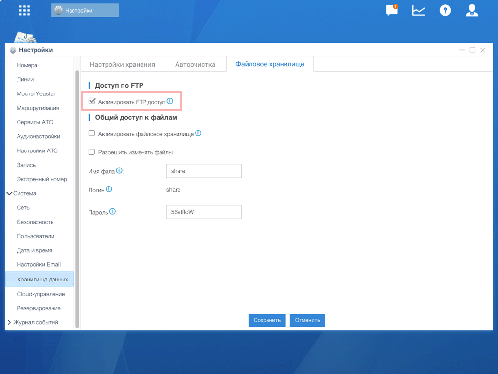
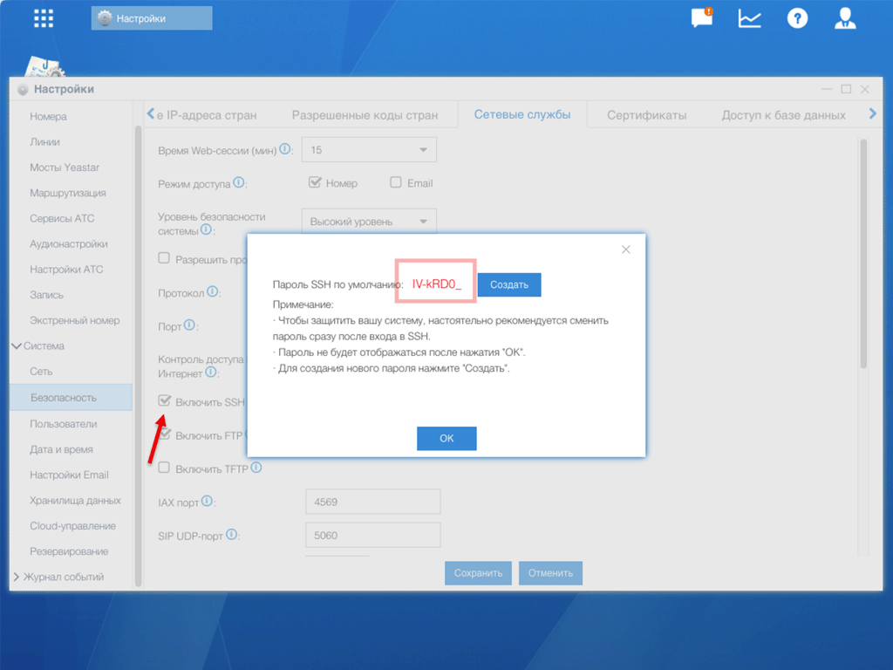

Публикация записей разговоров через FTP (Yeastar S20)
У Yeastar S20 нет HTTP API — в отличие от старших моделей, записи разговоров оттуда нужно забирать через FTP. Callbee подключается к АТС по FTP (порт 21), забирает аудиофайлы из /ftp_media/mmc/autorecords/ и передаёт их в CRM.
Только для S20
На моделях S50, S100, S300 используйте HTTP API — он быстрее, безопаснее и не требует FTP.
Что понадобится
Нет встроенного whitelist для FTP
В отличие от AMI, в настройках FTP-доступа нет поля «Разрешённые IP/Маска». Защита по IP делается на уровне роутера: пробросьте порт 21/TCP и passive-диапазон на локальный IP АТС, ограничьте источник IP-адресами Callbee. Без этого FTP будет открыт всему интернету — а там логин support общеизвестен.
Шаг 1. Включите FTP-доступ к записям
Перейдите в Настройки → Система → Хранилища данных → Файловое хранилище.
В блоке «Доступ по FTP» поставьте галочку «Активировать FTP доступ» и нажмите «Сохранить».

«Общий доступ к файлам» — не то же самое
Блок ниже (с полями «Имя файла», «Логин», «Пароль», логин share) — это Samba/CIFS для подключения АТС как сетевого диска в Windows. Для Callbee он не нужен — не включайте его и не путайте с FTP.
Шаг 2. Включите FTP-сервис и получите пароль
FTP использует те же учётные данные, что и SSH:
- Логин:
support(фиксированный, не меняется) - Пароль: тот же что у SSH-пользователя
support
Перейдите в Настройки → Система → Безопасность → Сетевые службы.
- Поставьте галочку «Включить SSH» — раздел с паролем откроется
- Поставьте галочку «Включить FTP» — стрелка на скриншоте ниже
- Скопируйте «Пароль SSH по умолчанию» из появившегося окна

Пароль показывается только один раз
Yeastar показывает пароль IV-kRD0_ (в вашем случае будет другой) только в этом окне. После нажатия «OK» пароль нельзя будет увидеть. Если забыли — нажмите «Создать» для генерации нового (старый перестанет работать).
Сохраните пароль сразу в менеджере паролей. Этот же пароль понадобится:
- в личном кабинете Callbee (при создании сервиса)
- при подключении к SSH для диагностики
- при ручной проверке FTP через FileZilla
Шаг 3. Смените стандартный пароль (рекомендуется)
Пароль SSH/FTP по умолчанию генерируется один раз при первом включении и дальше не меняется самостоятельно. Если АТС стояла у вас давно — пароль мог утечь (логи, старый админ, скриншоты в чатах).
Нажмите «Создать» рядом с полем пароля — Yeastar сгенерирует новый случайный пароль. Обязательно его сохраните.
Когда менять пароль
- Перед первой интеграцией с Callbee
- После увольнения админа, знавшего пароль
- Каждые 6 месяцев в рамках security-гигиены
Шаг 4. Откройте порт 21 на роутере
Пробросьте на роутере:
Passive FTP: нужен диапазон портов
FTP работает в двух режимах: active (сервер сам инициирует data-соединение) и passive (клиент инициирует по случайному порту). Callbee использует passive — это требует дополнительного диапазона портов.
Yeastar S20 по умолчанию использует диапазон 35000–35999 для passive. Пробросьте этот диапазон на роутере (TCP) в дополнение к порту 21. Без этого списание файлов зависнет после успешной авторизации.
Шаг 5. Проверьте FTP
На компьютере в той же сети (или с пробросом портов) выполните:
lftp -u support,ВАШ_ПАРОЛЬ <IP-АТС>Внутри lftp:
ls
cd /ftp_media/mmc/autorecords
lsВы должны увидеть структуру с папками по годам/месяцам и файлами .wav — это записи разговоров.
Через FileZilla:
- Хост:
<IP-АТС>или ваш домен - Протокол: FTP (обычный, не SFTP)
- Тип входа: Обычный
- Пользователь:
support - Пароль: тот что из
Шага 2 - Перейдите в
/ftp_media/mmc/autorecords/— должны быть папки с записями
Частые проблемы
FileZilla: «Connection established, waiting for welcome message...» и висит
Проблема в passive-режиме — диапазон 35000–35999 не проброшен на роутере. Вернитесь к
530 Login incorrect
Пароль неверный или был пересоздан через «Создать». Снова нажмите «Создать» в настройках и используйте новый пароль.
550 Failed to change directory при cd /ftp_media/mmc/autorecords
Пользователь support не имеет прав на папку с записями. Это бывает после обновления прошивки — зайдите по SSH и проверьте права:
ssh support@<IP-АТС>
ls -la /ftp_media/mmc/autorecords/Если владелец не support — напишите в поддержку.
Записи есть в АТС, но Callbee их не скачивает Проверьте что в личном кабинете Callbee:
- Протокол установлен как FTP (не SFTP)
- Порт 21 (не 22)
- Путь к записям
/ftp_media/mmc/autorecords(без слеша в конце)
FTP работает, но очень медленно Yeastar S20 — аппаратно слабая АТС. Если в системе много одновременных записей на скачивание — включите ротацию записей в настройках АТС или перейдите на HTTPS-публикацию через промежуточный сервер.
«Включить FTP» перестаёт работать после обновления прошивки Некоторые минорные версии прошивки Yeastar сбрасывают флаг «Включить FTP». После каждого обновления проверяйте, что галочка установлена.
SSH работает, FTP — нет Галочка «Включить FTP» не установлена. SSH и FTP включаются отдельно, несмотря на общий пароль.
FTP настроен!
Переходите к сетевым настройкам — проверим что все порты видны снаружи и правильно настроен firewall.